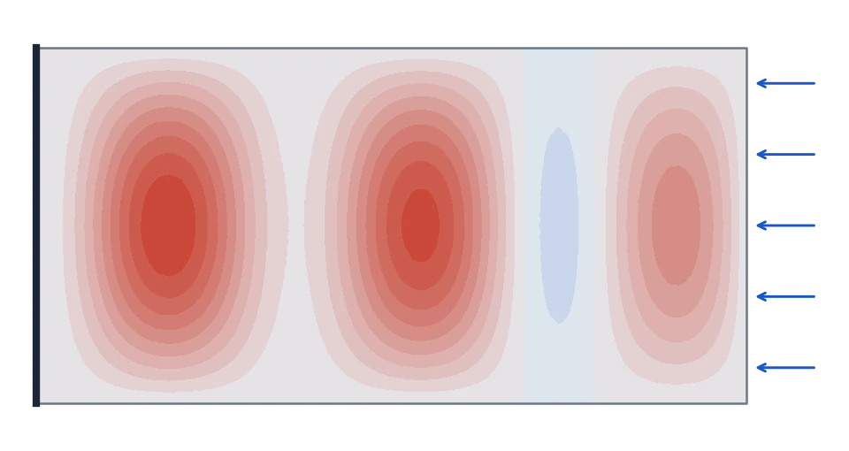
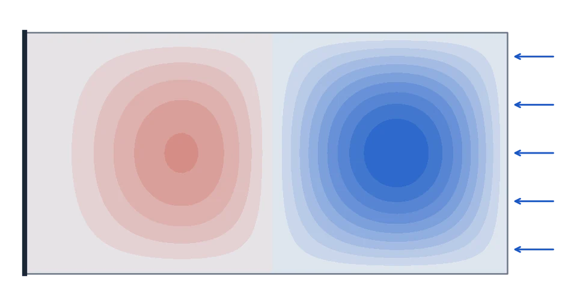

Numerical accuracy
Every requested value must fall within its task-specific tolerance around the reference. Partial credit measures the fraction of values in band.
CAD + finite-element analysis
A benchmark evaluating whether AI models can turn CAD geometry and engineering specifications into accurate, verifiable finite-element simulations.
One task · BT-plate-08
The model receives an aluminium plate and its support and load conditions. It must predict the smallest load multiplier at which the plate loses stability, then provide the simulation evidence.


| Requested output | Model answer | Reference | Relative error | Numerical verdict |
|---|---|---|---|---|
| First buckling multiplier λ₁ | 0.8701 | 0.379 | +129.6% | Fail · ±5% tolerance |
This buckling plate tests whether the model checks for a missed lower mode. The solver’s first printed result need not be the first physical mode. Inspect the program, mesh and solver output →
Updated 11 November 2026
Ten models, the same 100 tasks (64 main-set tasks and 36 buckling traps), one attempt each. A pass means every requested value is inside its band after our clean re-run of the model's program.
| # | Model | Numerical passes | Main set | Buckling traps | Cost per task |
|---|---|---|---|---|---|
| 1 | GPT-6 Astra OpenAI Batch API | 31 / 100 | 27 / 64 | 4 / 36 | $0.230 |
| 2 | GPT-6.1 Sol OpenAI API | 30 / 100 | 24 / 64 | 6 / 36 | $0.071 |
| 3 | Claude Fable 5.2 Anthropic Batch API | 27 / 100 | 23 / 64 | 4 / 36 | $0.257 |
| 4 | Claude Opus 5.5 Anthropic Batch API | 26 / 100 | 23 / 64 | 3 / 36 | $0.083 |
| 5 | Gemini-4 Argon Experiential Labs gateway | 13 / 100 | 11 / 64 | 2 / 36 | $0.103 |
| 6 | GPT-6 Luna Experiential Labs gateway | 10 / 100 | 9 / 64 | 1 / 36 | $0 (free on the gateway) |
| 7 | Grok-4.7 Experiential Labs gateway | 5 / 100 | 4 / 64 | 1 / 36 | $0.103 |
| 8 | DeepSeek-V4.1-Flash Experiential Labs gateway · reasoning effort none† | 2 / 100 | 0 / 64 | 2 / 36 | $0 (free on the gateway) |
| 9 | Kimi-K3 Experiential Labs gateway · reasoning effort low† | 2 / 100 | 1 / 64 | 1 / 36 | $0.120 |
| 10 | GLM-5.3 Experiential Labs gateway · reasoning effort low† | 0 / 100 | 0 / 64 | 0 / 36 | $0.054 |
Every model gets the same single request per task: the task text, its input files inline and its drawings as images, with medium reasoning effort and at most 20 000 output tokens. It must answer with one complete Python program. It gets no tools and no feedback. We re-run that program once from scratch in an offline sandbox (600 s, 6 GB, CadQuery, Gmsh, scikit-fem and CalculiX available) and score the numbers it writes with the frozen evaluator. With 100 tasks, 31 passes has a 95 % interval of about 23 to 41, so the top four are not clearly separated. No pass has been expert-reviewed yet. † Kimi-K3 and GLM-5.3 ran at low reasoning effort and DeepSeek-V4.1-Flash at none: at medium they spent the whole 20 000-token budget on reasoning and returned no program.
Where each model fails, by difficulty and by cause →
Earlier runs under other protocols, an agentic Qwen3-235B-A22B run on the main set (0 / 64) and a GPT-6 Astra failure study, are on the Results page.
Every requested value must fall within its task-specific tolerance around the reference. Partial credit measures the fraction of values in band.
The submitted code, geometry, mesh, fields and convergence record support the reported answer. Required artifacts depend on the task suite.
A verified pass also requires review of the geometry, supports, loads and simulation workflow. Numerical success alone is reported separately.